红色拍框、象牙白线床、石墨黑握柄，配一颗大号荧光网球。文本与缩放线条加粗，后台运行时网球在线床上起落弹跳，忙碌时增加右上方三点轮替提示。
触网压缩 → 升起 → 回落 · 1.2 秒循环
球拍固定，热点固定，球与阴影联动
移动到此区域，以拍头白点对准圆心点击。下方可切换其他状态；文本和缩放指针使用中心热点。
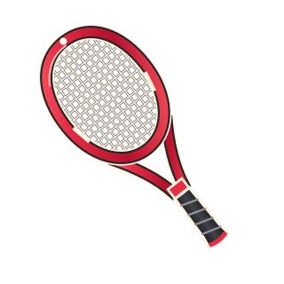
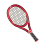
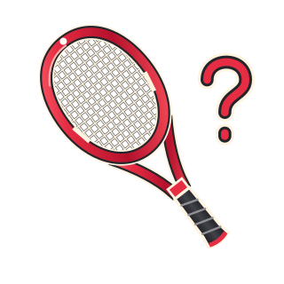
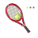
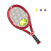
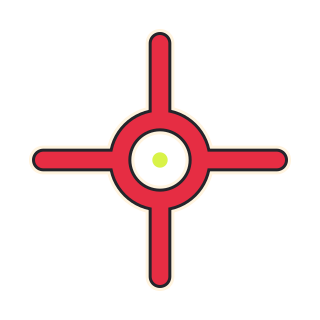
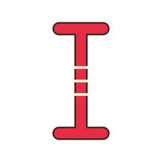
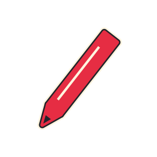
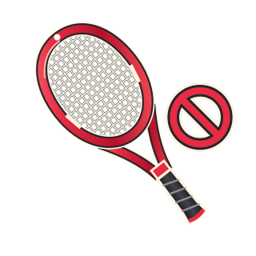
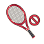
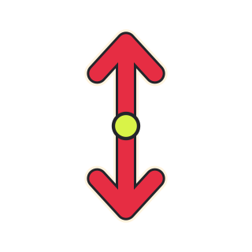
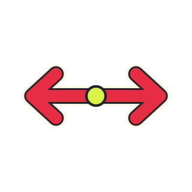
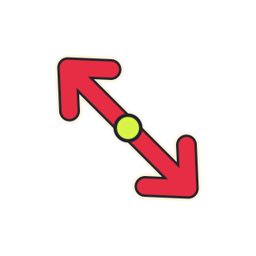
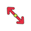
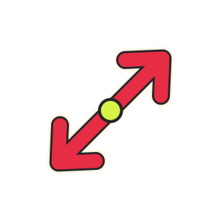
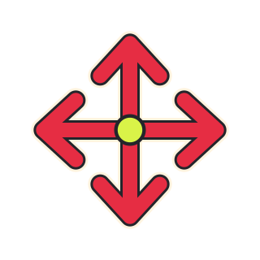
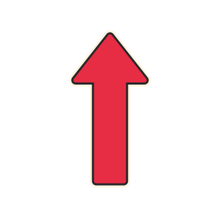
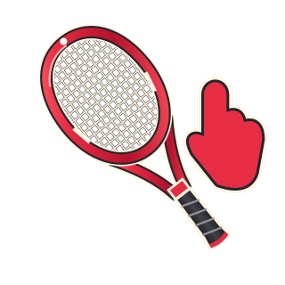
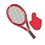
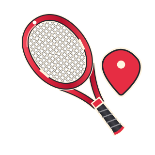
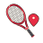
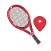
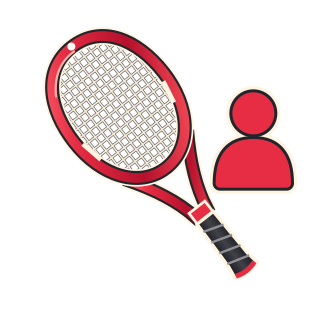
浏览器试用区默认以 64 px 显示，动态角色同步播放相同 24 帧。Windows ANI 的实际显示取决于系统指针大小和 DPI；原生加载与帧绘制结果见 validation.json。